Nearly as strange by today's standards as the concrete "round house" in Logan, Circleville's M.M. Crites farmhouse is actually a rare surviving example of a popular architectural style of the mid-1800s: the octagon house. Since George Gregg built the house 150 years ago, it might more appropriately be called The Gregg House, but the prominently labelled barn next to its original location has given it its more familiar name. Even a casual glance shows how unique the building is, and that it was constructed with eight walls--in the shape of an octagon.
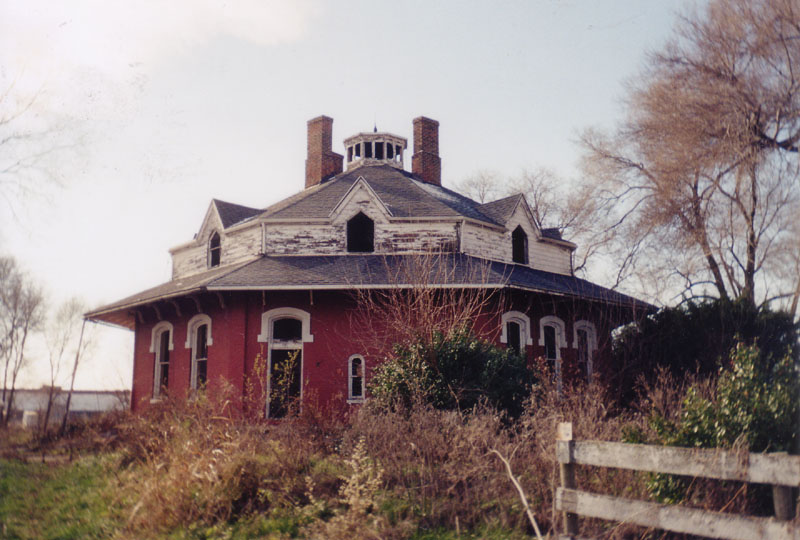
The Crites house has legendary status in Circleville, where it long sat at the back of a residential area not far from the famous pumpkin water tower. The overgrown fields that originally surrounded it preserved the look of a family farm, including the huge white barn with "M.M. Crites" painted on the broad side.
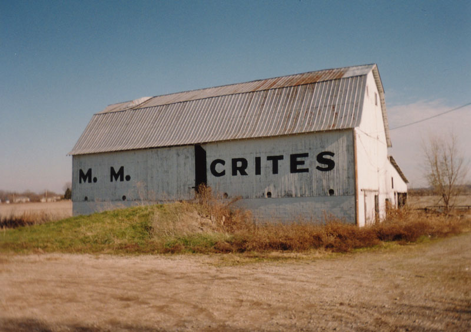
This gives us the name of the family who, for a while, owned and lived in this utterly bizarre house. Crites is an unusual enough name--especially if you remember the Critters movies from the '80s, in which the carnivorous soccerball-sized aliens are called crites. In the second one (better than the first, if you ask me--and part three had Leonardo DiCaprio!), the faceless bounty hunters went around saying, "Kill more crites."
Two friends of the website in Circleville remember going to junior high school with the son of the last family to live here, just a few years ago. (His name was Jon Betts, not Crites.) This would make sense, because the house and grounds were in surprisingly decent shape, clearly not empty long.
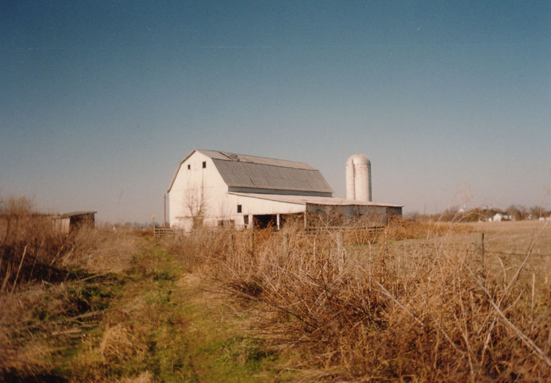
The barn in particular was in good condition. It's lined with livestock stalls and has haylofts with ladders that you can still climb without too much risk of . It's interesting to compare this, more recent barn to the one shown in the 1880 drawings further down.
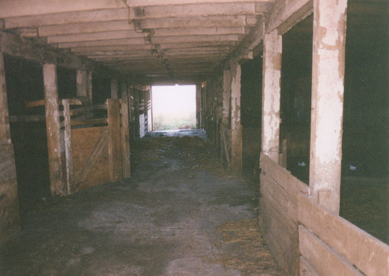
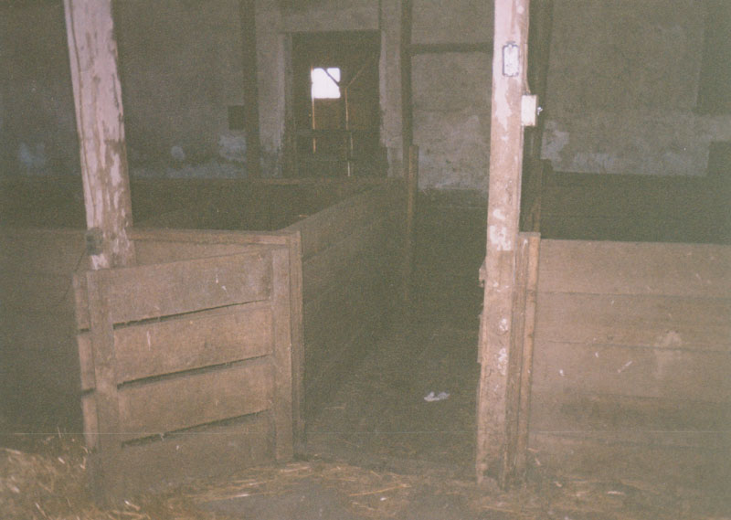
Another, smaller barn/shed stood right beside the house, and then there's the lawn, which was roughly circular. It's hard to tell which side of the house you're on, since they all look the same, though the placement of the biggest door makes it clear where the front is, as did the placement of the driveway in the house's original spot. In the old back yard a tire swing still hung from a tree.
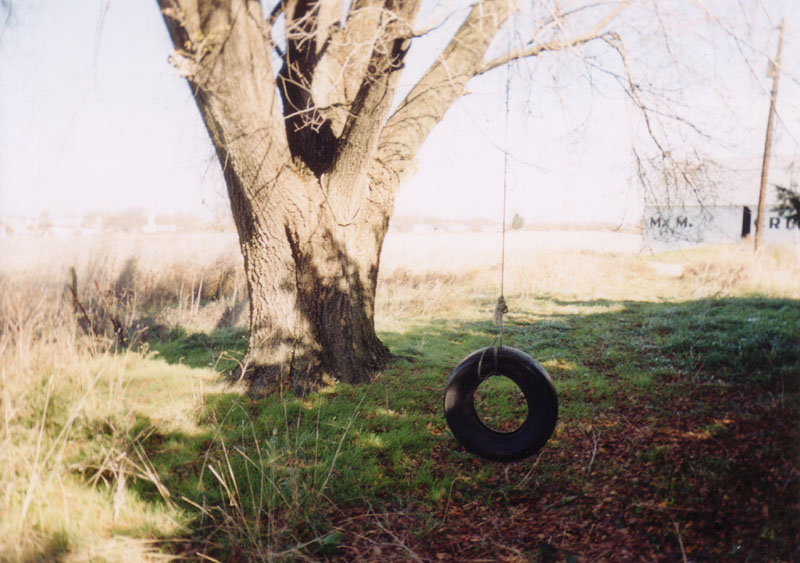
The house cuts a very interesting shape against the sky--somewhere between a mansion and a wigwam. It's certainly hard to imagine someone using an investment as big as their family's home to follow such an unusual fad, but I have to say I admire the independence. This style of building was in fact popular in the 1840s, but Circleville pioneered it even before then; the first county courthouse in Pickaway County was octagon-shaped, and when the George Gregg house was built around 1855, it was modeled after the old courthouse at Court and Main, built in 1814. When it was first established, Circleville, which was named for the shape of the local Hopewell earthworks, was laid out in a circular street pattern, with the many-sided courthouse at the center. The courthouse came down in the early 1840s when town fathers remade downtown into a typical grid of city blocks.
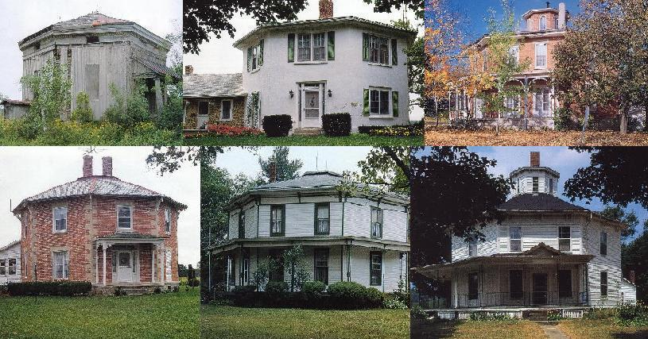
The Greggs were far from the first or only Ohioans to erect an eight-sided building. Aside from Circleville's courthouse (and a similar one in Scottsville, Kentucky), schools, churches, barns, and military structures had been utilizing the plan for decades. Thomas Jefferson even designed octagonal rooms for Monticello, though they were never built. Some forts had eight sides, in order to increase their range of fire. But the eight-sided home became something of a fad in the mid-nineteenth century thanks to Orson Fowler's 1848 book A Home for All, or a New, Cheap, Convenient and Superior Form of Building. They were built all over Ohio in the 1850s and 60s--especially in Ashtabula County, which has more than any other Buckeye county. The houses pictured above stand in Berwick, Tiffin, Monroeville, Austinburg, and Windsor; others can be found in Troy, Hamilton, Richmond, South New Lyme, Sinking Spring, and Columbus.
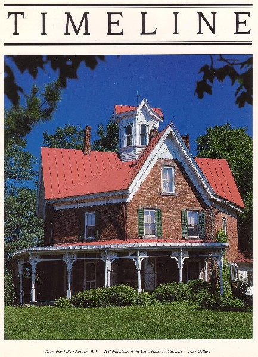
To find out more about the history of octagonal construction in Ohio, check out the December 1989/January 1990 edition of Timeline, the magazine of the Ohio Historical Society. The first story, "Squaring the Circle," goes into great detail on the topic. You can read the entire article by clicking on the cover pictured above, or by clicking here.
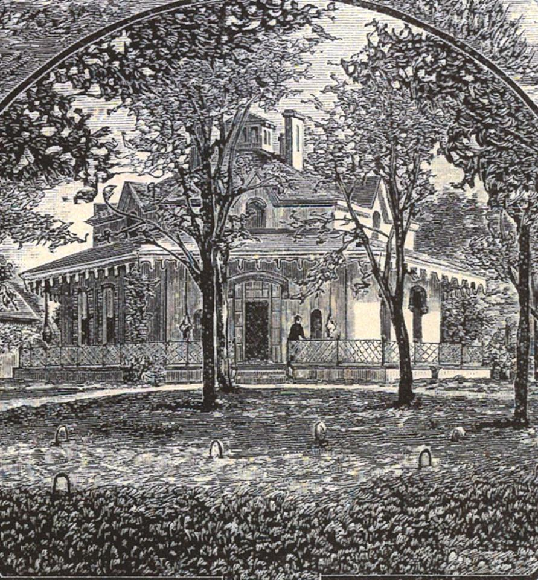
The drawings above and below come from an 1880 history of Pickaway County, and they show the Octagon House back when it was the hub of one of the biggest farms in the area. Interesting to see it with a nice lawn and decorative trees. Those trees must all be gone now--with the exception of one or two very big, very old ones near the house.
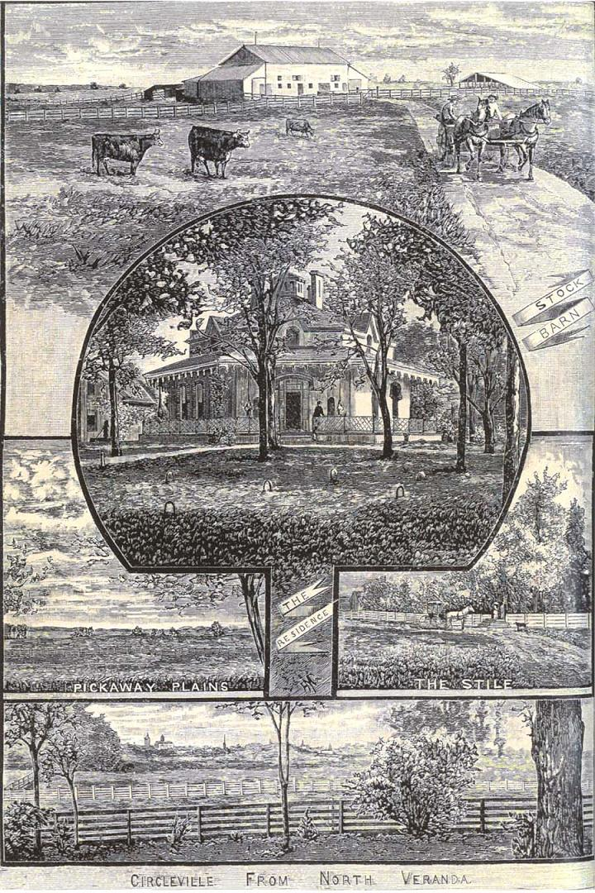
The Gregg family must have been influential to have their private home represented in a history book. Strange that such a historically significant place could deteriorate and be forgotten in an unused field for so long.
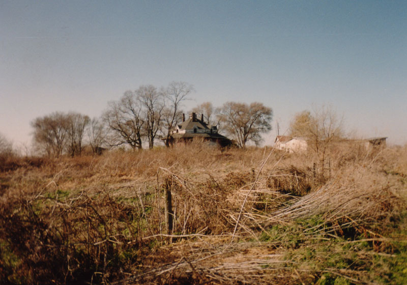
To take a look at the internal architecture of the Gregg, Betts, and Crites family's octagon-shaped house, click the picture below.

Inside the Octagon House
UPDATE
My visit to the Octagon House in September of 2002 gave me the chance to see it in the final days before the battle over its fate began to heat up. The place where it stood, near the back of a field off Route 23, was purchased and prepped for development by everybody's favorite tax-exempt, minimum-wage-paying, small-business-destroying corporate behemoth: WalMart, Inc.
WalMart was just going to knock it down, but the good people at the Roundtown Conservancy put their heads together and worked hard on a solution that would allow Circleville to enjoy both the historic octagonal house and the majestic beauty of a WalMart SuperCenter.
Since the folks at WalMart weren't likely to give up a corner of their lot, the Roundtown Conservancy prevailed upon them to allow the house to be moved via truck to a new location. Two acres behind the gigantic store were donated by developer Don M. Casto, and Bart Dingey of Dingey Movers agreed to take on the project with payment--more than $100,000--deferred for two months.
Preparations began around January 11, 2004. The the physics and logistics involved with moving an entire brick house, especially a 150-year-old house with such an inconvenient shape, are truly amazing. The foundation had to be reinforced with concrete after a trench was dug all the way around, and three layers of I-beams were inserted through. The weight was shifted onto the beams, the old foundation was removed, and the temporary supports were replaced with wheels. Finally a flatbed semi hooked up to the whole thing and pulled all 480 tons of octagon-shaped house along a specially-prepared flat thoroughfare in the WalMart field.
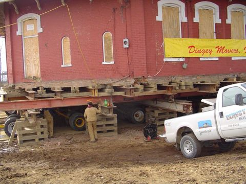
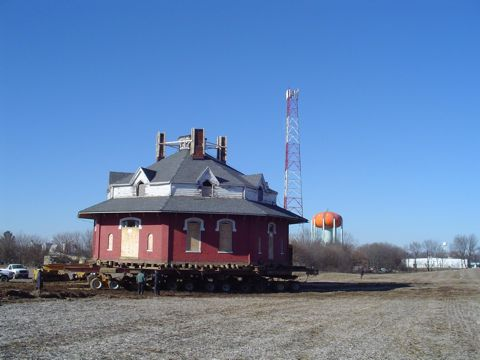
The building began to move at noon on Valentine's Day, travelled 100 yards in four hours, then resumed moving the following morning. By 3PM on February 15 it had reached its stopping place just a few yards from its final new spot, where it was wheeled after the property was prepared. Now the Crites House is behind WalMart instead of a distant memory somewhere around Sporting Goods.

The transfer of the octagon house may have been a record in industrial moving; never before was something so large and heavy moved so far so quickly. Dingey Movers employed a self-adjusting hydraulics system that allowed the tires to shift support for bumps in the road as well as motion in the load, while also driving the wheels forward. I don't really understand this, but I am glad they were finally able to save this one-of-a-kind piece of Ohio history. Truly, credit is due to the Roundtown Conservancy and their supporters for making this a reality. Be sure to visit their page about the octagon house and its move, complete with many more photos and much better information. Thanks to them, you should be able to take a tour of the house before much longer.
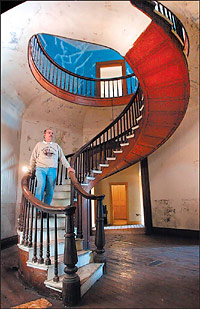
The Roundtown Conservancy
The Roundtown Conservancy: Octagon House, Past Present & Future
Timeline Magazine: Octagonal Architecture in Ohio
Columbus Dispatch Article: "Residents, Developer Will Preserve Circleville's Historic 8-Sided House"
Circleville Herald Article: "Roundtown Conservancy Rallies to Save Octagonal House"
The Lane-Hooven House - An octagonal house in Hamilton, Ohio
Other Octagonal Houses in Ohio - A List
Back
Sources
Kossler, Melissa. "Residents, Developer Will Preserve Circleville's Historic 8-Sided House." Columbus Dispatch, January 31, 2004.
Luce, W. Ray. "Squaring the Circle: Octagonal Architecture." Timeline. January 1989/December 1990: 2-15.
Pratt, Mike. "Round Town Conservancy Rallies to Save Octagonal House." Circleville Herald, October 15, 2003.